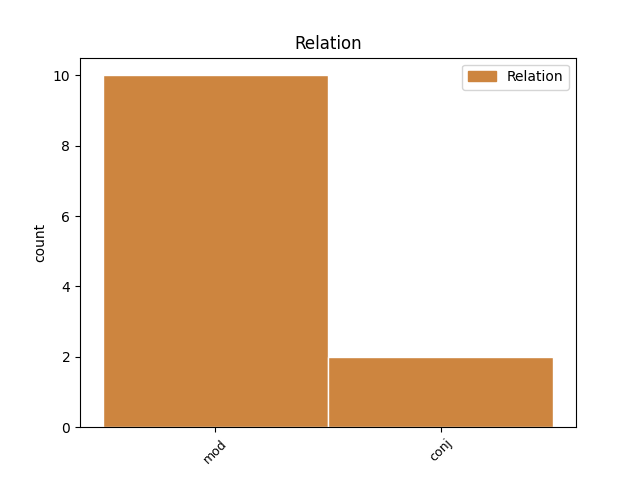

Distribution of features within this leaf

Agreement Rules sorted by frequency.
- When the dependent token is the modifer(mod) of the head token, and the head token is AUX and the dependent token is VERB.
1 لہذا _ _ _ _ 0 _ _ _
2 منصب _ _ _ _ 0 _ _ _
3 امامت _ _ _ _ 0 _ _ _
4 پر _ _ _ _ 0 _ _ _
5 فائز _ _ _ _ 0 _ _ _
6 یہ _ _ _ _ 0 _ _ _
7 امت _ _ _ _ 0 _ _ _
8 جب _ _ _ _ 0 _ _ _
9 تک _ _ _ _ 0 _ _ _
10 انسانیت _ _ _ _ 0 _ _ _
11 کی _ _ _ _ 0 _ _ _
12 رہبری _ _ _ _ 0 _ _ _
13 نہیں _ _ _ _ 0 _ _ _
14 کرےگی کر VERB VM Gender=Fem|Mood=Ind|Number=Sing|Person=3|Tense=Fut|VerbForm=Fin|Voice=Act 22 mod _ ChunkId=VGF|ChunkType=head|Stype=declarative|Tam=gA|Vib=گا
15 اس _ _ _ _ 0 _ _ _
16 سرزمین _ _ _ _ 0 _ _ _
17 کی _ _ _ _ 0 _ _ _
18 اصلاح _ _ _ _ 0 _ _ _
19 ممکن _ _ _ _ 0 _ _ _
20 نہیں _ _ _ _ 0 _ _ _
21 ہو _ _ _ _ 0 _ _ _
22 سکےگی سک AUX VAUX Gender=Fem|Mood=Ind|Number=Sing|Tense=Fut|VerbForm=Fin 0 _ _ _
23 ۔ _ _ _ _ 0 _ _ _
1 سپریم _ _ _ _ 0 _ _ _
2 کورٹ _ _ _ _ 0 _ _ _
3 نے _ _ _ _ 0 _ _ _
4 اےک _ _ _ _ 0 _ _ _
5 تنظیم _ _ _ _ 0 _ _ _
6 کی _ _ _ _ 0 _ _ _
7 درخواست _ _ _ _ 0 _ _ _
8 پر _ _ _ _ 0 _ _ _
9 یہ _ _ _ _ 0 _ _ _
10 ریمارک _ _ _ _ 0 _ _ _
11 کیا _ _ _ _ 0 _ _ _
12 جس _ _ _ _ 0 _ _ _
13 نے _ _ _ _ 0 _ _ _
14 کہا _ _ _ _ 0 _ _ _
15 تھا _ _ _ _ 0 _ _ _
16 کہ _ _ _ _ 0 _ _ _
17 ملک _ _ _ _ 0 _ _ _
18 مےں _ _ _ _ 0 _ _ _
19 اناج _ _ _ _ 0 _ _ _
20 کے _ _ _ _ 0 _ _ _
21 گودام _ _ _ _ 0 _ _ _
22 بھرے _ _ _ _ 0 _ _ _
23 پڑے _ _ _ _ 0 _ _ _
24 ہےں _ _ _ _ 0 _ _ _
25 اور _ _ _ _ 0 _ _ _
26 کئی _ _ _ _ 0 _ _ _
27 جگہ _ _ _ _ 0 _ _ _
28 تو _ _ _ _ 0 _ _ _
29 اناج _ _ _ _ 0 _ _ _
30 گل _ _ _ _ 0 _ _ _
31 اور _ _ _ _ 0 _ _ _
32 سڑ _ _ _ _ 0 _ _ _
33 رہا _ _ _ _ 0 _ _ _
34 ہے ہے AUX VAUX Mood=Ind|Number=Sing|Person=3|Tense=Pres|VerbForm=Fin 0 _ _ _
35 اس _ _ _ _ 0 _ _ _
36 کے _ _ _ _ 0 _ _ _
37 باوجود _ _ _ _ 0 _ _ _
38 غریب _ _ _ _ 0 _ _ _
39 عوام _ _ _ _ 0 _ _ _
40 کو _ _ _ _ 0 _ _ _
41 غذائی _ _ _ _ 0 _ _ _
42 اجناس _ _ _ _ 0 _ _ _
43 دستیاب _ _ _ _ 0 _ _ _
44 نہیں _ _ _ _ 0 _ _ _
45 ہےں ہے VERB VM Mood=Ind|Number=Plur|Person=3|Tense=Pres|VerbForm=Fin|Voice=Act 34 conj _ ChunkId=VGF5|ChunkType=head|Stype=declarative|Tam=hE|Vib=ہے
46 اور _ _ _ _ 0 _ _ _
47 وہ _ _ _ _ 0 _ _ _
48 ہنوز _ _ _ _ 0 _ _ _
49 بھوک _ _ _ _ 0 _ _ _
50 و _ _ _ _ 0 _ _ _
51 افلاس _ _ _ _ 0 _ _ _
52 کا _ _ _ _ 0 _ _ _
53 شکار _ _ _ _ 0 _ _ _
54 ہیں _ _ _ _ 0 _ _ _
55 ۔ _ _ _ _ 0 _ _ _
Disagree Examples:
1 جسٹس _ _ _ _ 0 _ _ _
2 بی _ _ _ _ 0 _ _ _
3 ایچ _ _ _ _ 0 _ _ _
4 مارلا _ _ _ _ 0 _ _ _
5 پلے _ _ _ _ 0 _ _ _
6 اور _ _ _ _ 0 _ _ _
7 جسٹس _ _ _ _ 0 _ _ _
8 ایس _ _ _ _ 0 _ _ _
9 جے _ _ _ _ 0 _ _ _
10 وظیفدار _ _ _ _ 0 _ _ _
11 نے _ _ _ _ 0 _ _ _
12 کہا _ _ _ _ 0 _ _ _
13 کہ _ _ _ _ 0 _ _ _
14 اگر _ _ _ _ 0 _ _ _
15 بیوی _ _ _ _ 0 _ _ _
16 کا _ _ _ _ 0 _ _ _
17 ادعا _ _ _ _ 0 _ _ _
18 ہو _ _ _ _ 0 _ _ _
19 کہ _ _ _ _ 0 _ _ _
20 اس _ _ _ _ 0 _ _ _
21 کے _ _ _ _ 0 _ _ _
22 شوہر _ _ _ _ 0 _ _ _
23 نے _ _ _ _ 0 _ _ _
24 اس _ _ _ _ 0 _ _ _
25 سے _ _ _ _ 0 _ _ _
26 جنسی _ _ _ _ 0 _ _ _
27 تعلقات _ _ _ _ 0 _ _ _
28 ترک _ _ _ _ 0 _ _ _
29 کر _ _ _ _ 0 _ _ _
30 دیے _ _ _ _ 0 _ _ _
31 ہیں _ _ _ _ 0 _ _ _
32 تو _ _ _ _ 0 _ _ _
33 یہ _ _ _ _ 0 _ _ _
34 فطری _ _ _ _ 0 _ _ _
35 ہے _ _ _ _ 0 _ _ _
36 کہ _ _ _ _ 0 _ _ _
37 وہ _ _ _ _ 0 _ _ _
38 اس _ _ _ _ 0 _ _ _
39 کے _ _ _ _ 0 _ _ _
40 بارے _ _ _ _ 0 _ _ _
41 میں _ _ _ _ 0 _ _ _
42 تحقیقات _ _ _ _ 0 _ _ _
43 کرے _ _ _ _ 0 _ _ _
44 گی گی AUX VAUX Gender=Fem|Mood=Ind|Number=Sing|Person=3|Tense=Fut|VerbForm=Fin 0 _ _ _
45 چاہے _ _ _ _ 0 _ _ _
46 اس _ _ _ _ 0 _ _ _
47 کے _ _ _ _ 0 _ _ _
48 شوہر _ _ _ _ 0 _ _ _
49 کی _ _ _ _ 0 _ _ _
50 زندگی _ _ _ _ 0 _ _ _
51 میں _ _ _ _ 0 _ _ _
52 کوئی _ _ _ _ 0 _ _ _
53 دوسری _ _ _ _ 0 _ _ _
54 عورت _ _ _ _ 0 _ _ _
55 ہو ہو VERB VM Mood=Ind|Tense=Pres|VerbForm=Fin|Voice=Act 44 mod _ ChunkId=VGF6|ChunkType=head|Stype=declarative|Tam=hE|Vib=ہے
56 یا _ _ _ _ 0 _ _ _
57 نہ _ _ _ _ 0 _ _ _
58 ہو _ _ _ _ 0 _ _ _
59 ۔ _ _ _ _ 0 _ _ _
1 جسٹس _ _ _ _ 0 _ _ _
2 بی _ _ _ _ 0 _ _ _
3 ایچ _ _ _ _ 0 _ _ _
4 مارلا _ _ _ _ 0 _ _ _
5 پلے _ _ _ _ 0 _ _ _
6 اور _ _ _ _ 0 _ _ _
7 جسٹس _ _ _ _ 0 _ _ _
8 ایس _ _ _ _ 0 _ _ _
9 جے _ _ _ _ 0 _ _ _
10 وظیفدار _ _ _ _ 0 _ _ _
11 نے _ _ _ _ 0 _ _ _
12 کہا _ _ _ _ 0 _ _ _
13 کہ _ _ _ _ 0 _ _ _
14 اگر _ _ _ _ 0 _ _ _
15 بیوی _ _ _ _ 0 _ _ _
16 کا _ _ _ _ 0 _ _ _
17 ادعا _ _ _ _ 0 _ _ _
18 ہو _ _ _ _ 0 _ _ _
19 کہ _ _ _ _ 0 _ _ _
20 اس _ _ _ _ 0 _ _ _
21 کے _ _ _ _ 0 _ _ _
22 شوہر _ _ _ _ 0 _ _ _
23 نے _ _ _ _ 0 _ _ _
24 اس _ _ _ _ 0 _ _ _
25 سے _ _ _ _ 0 _ _ _
26 جنسی _ _ _ _ 0 _ _ _
27 تعلقات _ _ _ _ 0 _ _ _
28 ترک _ _ _ _ 0 _ _ _
29 کر _ _ _ _ 0 _ _ _
30 دیے _ _ _ _ 0 _ _ _
31 ہیں _ _ _ _ 0 _ _ _
32 تو _ _ _ _ 0 _ _ _
33 یہ _ _ _ _ 0 _ _ _
34 فطری _ _ _ _ 0 _ _ _
35 ہے _ _ _ _ 0 _ _ _
36 کہ _ _ _ _ 0 _ _ _
37 وہ _ _ _ _ 0 _ _ _
38 اس _ _ _ _ 0 _ _ _
39 کے _ _ _ _ 0 _ _ _
40 بارے _ _ _ _ 0 _ _ _
41 میں _ _ _ _ 0 _ _ _
42 تحقیقات _ _ _ _ 0 _ _ _
43 کرے _ _ _ _ 0 _ _ _
44 گی گی AUX VAUX Gender=Fem|Mood=Ind|Number=Sing|Person=3|Tense=Fut|VerbForm=Fin 0 _ _ _
45 چاہے _ _ _ _ 0 _ _ _
46 اس _ _ _ _ 0 _ _ _
47 کے _ _ _ _ 0 _ _ _
48 شوہر _ _ _ _ 0 _ _ _
49 کی _ _ _ _ 0 _ _ _
50 زندگی _ _ _ _ 0 _ _ _
51 میں _ _ _ _ 0 _ _ _
52 کوئی _ _ _ _ 0 _ _ _
53 دوسری _ _ _ _ 0 _ _ _
54 عورت _ _ _ _ 0 _ _ _
55 ہو ہو VERB VM Mood=Ind|Tense=Pres|VerbForm=Fin|Voice=Act 44 mod _ ChunkId=VGF6|ChunkType=head|Stype=declarative|Tam=hE|Vib=ہے
56 یا _ _ _ _ 0 _ _ _
57 نہ _ _ _ _ 0 _ _ _
58 ہو _ _ _ _ 0 _ _ _
59 ۔ _ _ _ _ 0 _ _ _
1 منہاج _ _ _ _ 0 _ _ _
2 القرآن _ _ _ _ 0 _ _ _
3 محبوب _ _ _ _ 0 _ _ _
4 نگر _ _ _ _ 0 _ _ _
5 کے _ _ _ _ 0 _ _ _
6 زیر _ _ _ _ 0 _ _ _
7 اہتمام _ _ _ _ 0 _ _ _
8 سرزمین _ _ _ _ 0 _ _ _
9 محبوب _ _ _ _ 0 _ _ _
10 نگر _ _ _ _ 0 _ _ _
11 پر _ _ _ _ 0 _ _ _
12 پہلی _ _ _ _ 0 _ _ _
13 مرتبہ _ _ _ _ 0 _ _ _
14 اےک _ _ _ _ 0 _ _ _
15 منفرد _ _ _ _ 0 _ _ _
16 انداز _ _ _ _ 0 _ _ _
17 مےں _ _ _ _ 0 _ _ _
18 صوفیانہ _ _ _ _ 0 _ _ _
19 کلام _ _ _ _ 0 _ _ _
20 قوالی _ _ _ _ 0 _ _ _
21 کا _ _ _ _ 0 _ _ _
22 نعتیہ _ _ _ _ 0 _ _ _
23 طرز _ _ _ _ 0 _ _ _
24 پر _ _ _ _ 0 _ _ _
25 اہتمام _ _ _ _ 0 _ _ _
26 23 _ _ _ _ 0 _ _ _
27 اپریل _ _ _ _ 0 _ _ _
28 ہفتہ _ _ _ _ 0 _ _ _
29 کو _ _ _ _ 0 _ _ _
30 بعد _ _ _ _ 0 _ _ _
31 نماز _ _ _ _ 0 _ _ _
32 عشا _ _ _ _ 0 _ _ _
33 9 _ _ _ _ 0 _ _ _
34 بجے _ _ _ _ 0 _ _ _
35 شب _ _ _ _ 0 _ _ _
36 بمقام _ _ _ _ 0 _ _ _
37 الماس _ _ _ _ 0 _ _ _
38 فنکشن _ _ _ _ 0 _ _ _
39 ہال _ _ _ _ 0 _ _ _
40 , _ _ _ _ 0 _ _ _
41 رامیا _ _ _ _ 0 _ _ _
42 باؤلی _ _ _ _ 0 _ _ _
43 عمل _ _ _ _ 0 _ _ _
44 مےں _ _ _ _ 0 _ _ _
45 لایا _ _ _ _ 0 _ _ _
46 جا _ _ _ _ 0 _ _ _
47 رہا _ _ _ _ 0 _ _ _
48 ہے ہے AUX VAUX Mood=Ind|Number=Sing|Person=3|Tense=Pres|VerbForm=Fin 0 _ _ _
49 جس _ _ _ _ 0 _ _ _
50 مےں _ _ _ _ 0 _ _ _
51 ثناخوان _ _ _ _ 0 _ _ _
52 رسول _ _ _ _ 0 _ _ _
53 جناب _ _ _ _ 0 _ _ _
54 محمد _ _ _ _ 0 _ _ _
55 یوسف _ _ _ _ 0 _ _ _
56 ( _ _ _ _ 0 _ _ _
57 حال _ _ _ _ 0 _ _ _
58 مقیم _ _ _ _ 0 _ _ _
59 جدہ _ _ _ _ 0 _ _ _
60 سعودی _ _ _ _ 0 _ _ _
61 عرب _ _ _ _ 0 _ _ _
62 ) _ _ _ _ 0 _ _ _
63 کے _ _ _ _ 0 _ _ _
64 علاوہ _ _ _ _ 0 _ _ _
65 حیدرآباد _ _ _ _ 0 _ _ _
66 کے _ _ _ _ 0 _ _ _
67 مشہور _ _ _ _ 0 _ _ _
68 و _ _ _ _ 0 _ _ _
69 معروف _ _ _ _ 0 _ _ _
70 نعت_خوان _ _ _ _ 0 _ _ _
71 اور _ _ _ _ 0 _ _ _
72 جماعت _ _ _ _ 0 _ _ _
73 الحبشی _ _ _ _ 0 _ _ _
74 دف _ _ _ _ 0 _ _ _
75 کے _ _ _ _ 0 _ _ _
76 ساتھ _ _ _ _ 0 _ _ _
77 اپنے _ _ _ _ 0 _ _ _
78 مخصوص _ _ _ _ 0 _ _ _
79 انداز _ _ _ _ 0 _ _ _
80 مےں _ _ _ _ 0 _ _ _
81 بارگاہ _ _ _ _ 0 _ _ _
82 رسالت _ _ _ _ 0 _ _ _
83 مآب _ _ _ _ 0 _ _ _
84 مےں _ _ _ _ 0 _ _ _
85 نذرانہ _ _ _ _ 0 _ _ _
86 عقیدت _ _ _ _ 0 _ _ _
87 پیش _ _ _ _ 0 _ _ _
88 کرنے _ _ _ _ 0 _ _ _
89 کی _ _ _ _ 0 _ _ _
90 سعادت _ _ _ _ 0 _ _ _
91 حاصل _ _ _ _ 0 _ _ _
92 کریں_گے کر VERB VM Gender=Masc|Mood=Ind|Number=Sing|Person=3|Polite=Form|Tense=Fut|VerbForm=Fin|Voice=Act 48 mod _ ChunkId=VGF2|ChunkType=head|SpaceAfter=No|Stype=declarative|Tam=gA|Vib=گا
93 ۔ _ _ _ _ 0 _ _ _
1 واضح _ _ _ _ 0 _ _ _
2 رہے _ _ _ _ 0 _ _ _
3 کہ _ _ _ _ 0 _ _ _
4 لستھ _ _ _ _ 0 _ _ _
5 ملنگا _ _ _ _ 0 _ _ _
6 نے _ _ _ _ 0 _ _ _
7 سری _ _ _ _ 0 _ _ _
8 لنکا _ _ _ _ 0 _ _ _
9 بورڈ _ _ _ _ 0 _ _ _
10 کو _ _ _ _ 0 _ _ _
11 انگلینڈ _ _ _ _ 0 _ _ _
12 دورے _ _ _ _ 0 _ _ _
13 کے _ _ _ _ 0 _ _ _
14 لیے _ _ _ _ 0 _ _ _
15 اپنی _ _ _ _ 0 _ _ _
16 عدم_دستیابی _ _ _ _ 0 _ _ _
17 سے _ _ _ _ 0 _ _ _
18 آگاہ _ _ _ _ 0 _ _ _
19 کر _ _ _ _ 0 _ _ _
20 دیا _ _ _ _ 0 _ _ _
21 تھا _ _ _ _ 0 _ _ _
22 اور _ _ _ _ 0 _ _ _
23 کہا _ _ _ _ 0 _ _ _
24 تھا _ _ _ _ 0 _ _ _
25 کہ _ _ _ _ 0 _ _ _
26 ان _ _ _ _ 0 _ _ _
27 کے _ _ _ _ 0 _ _ _
28 گھٹنے _ _ _ _ 0 _ _ _
29 مےں _ _ _ _ 0 _ _ _
30 تکلیف _ _ _ _ 0 _ _ _
31 ہے _ _ _ _ 0 _ _ _
32 وہ _ _ _ _ 0 _ _ _
33 اس _ _ _ _ 0 _ _ _
34 کا _ _ _ _ 0 _ _ _
35 علاج _ _ _ _ 0 _ _ _
36 کرائیں_گے کرا VERB VM Gender=Masc|Mood=Ind|Number=Plur|Tense=Fut|VerbForm=Fin|Voice=Act 48 mod _ ChunkId=VGF5|ChunkType=head|Stype=declarative|Tam=gA|Vib=گا
37 لیکن _ _ _ _ 0 _ _ _
38 انہوں _ _ _ _ 0 _ _ _
39 نے _ _ _ _ 0 _ _ _
40 ممبئی _ _ _ _ 0 _ _ _
41 انڈینس _ _ _ _ 0 _ _ _
42 کی _ _ _ _ 0 _ _ _
43 جانب _ _ _ _ 0 _ _ _
44 سے _ _ _ _ 0 _ _ _
45 کھیلنا _ _ _ _ 0 _ _ _
46 جاری _ _ _ _ 0 _ _ _
47 رکھا _ _ _ _ 0 _ _ _
48 ہے ہے AUX VAUX Mood=Ind|Number=Sing|Person=3|Tense=Pres|VerbForm=Fin 0 _ _ _
49 ۔ _ _ _ _ 0 _ _ _